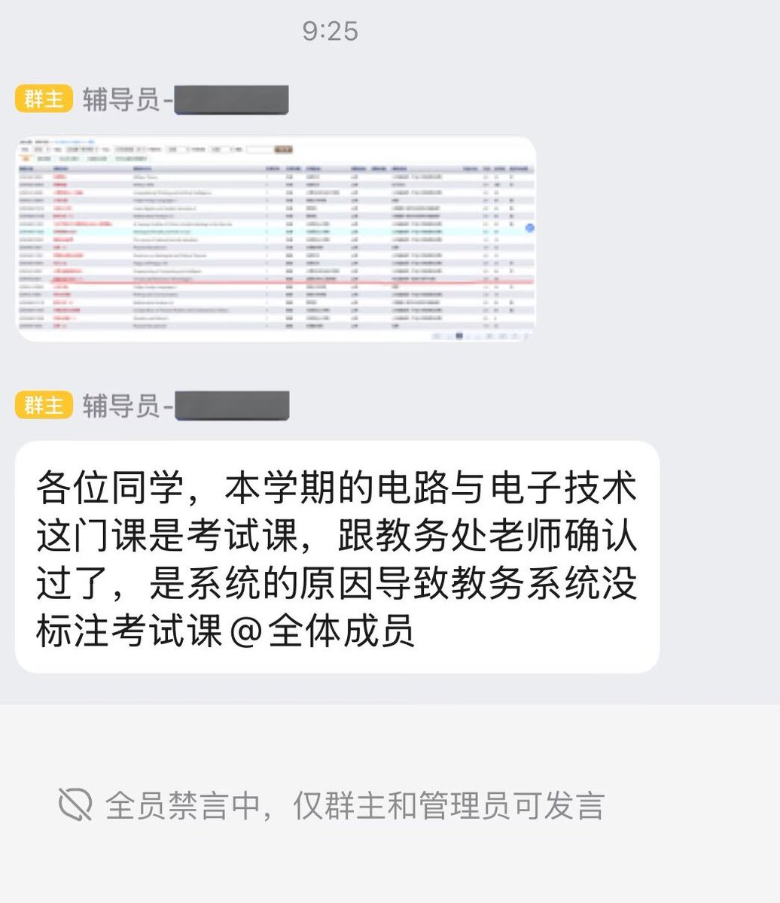

環状線怀疑自己上了个「威海工业高中」而不是「大学」。
「电路与电子技术」和環状線在实验室主攻的专业牛马不相关，本来環状線完全没有学习的必要。
但因为「变成了」考试课，考试课要考试而且很难，所以为了那个沉重而无用的数字能大于 60 ，環状線不得不把时间浪费在这些毛线用处没有的功课上。
当三年做题蛆终于考上了大学，却还是要继续当做题蛆。果然，環状線还是逃不了当做题蛆的运命吗，呜呜呜😭
「电路与电子技术」和環状線在实验室主攻的专业牛马不相关，本来環状線完全没有学习的必要。
但因为「变成了」考试课，考试课要考试而且很难，所以为了那个沉重而无用的数字能大于 60 ，環状線不得不把时间浪费在这些毛线用处没有的功课上。
当三年做题蛆终于考上了大学，却还是要继续当做题蛆。果然，環状線还是逃不了当做题蛆的运命吗，呜呜呜😭
